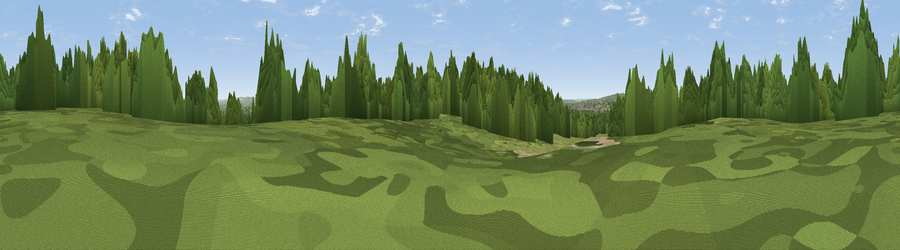

Viewpoint near Ash Vale
#39472 in England · top 54% of its area beats it · near Ash ValeThe view, rendered

A 360° render of this exact spot computed from the terrain model, tree cover and land cover — summer colours, afternoon light, calibrated against photographs of famous viewpoints. Real trees, hedges and buildings will differ in detail.
The panorama
Grey silhouette: terrain skyline in each direction (720 bearings, Earth curvature and refraction included). Dashed green: skyline with trees (+15 m) and buildings (+8 m) as obstacles. Blue strip: how far the ground is visible on each bearing.
Where the view opens
Wedge length = distance to the farthest visible ground on that bearing (vegetation-aware). Rings at 10, 25 and 50 km.
What fills the view
65% woodland · 20% grassland · 10% built-up · 4% cropland ·
Angular shares of the visible panorama (visual magnitude), not map area. Landscape diversity 0.43 (0–1 Shannon).
Key numbers
More beautiful places nearby
The staircase of upgrades: each row has a higher view potential than everything closer. Driving times are estimates from straight-line distance, calibrated against real road routing — check an actual route before setting out.
| Place | Direction | Drive | Score |
|---|---|---|---|
| Viewpoint near Ash | SSE · 1 km | ~2 min | 39.5 |
| Viewpoint near Deepcut | NNE · 3 km | ~8 min | 41.9 |
| Viewpoint near Seale | S · 4 km | ~9 min | 51.5 |
| Viewpoint near Puttenham | SSE · 4 km | ~9 min | 62.0 |
| Viewpoint near Wanborough | SE · 6 km | ~12 min | 65.5 |
| Viewpoint near Compton | SE · 7 km | ~14 min | 66.7 |
| Viewpoint near Hascombe | SSE · 17 km | ~29 min | 70.1 |
| Viewpoint near Fernhurst | S · 23 km | ~38 min | 75.1 |
51.26251, -0.70420 · source: osm peak · position refined by local search. Computed location — check access rights before visiting.